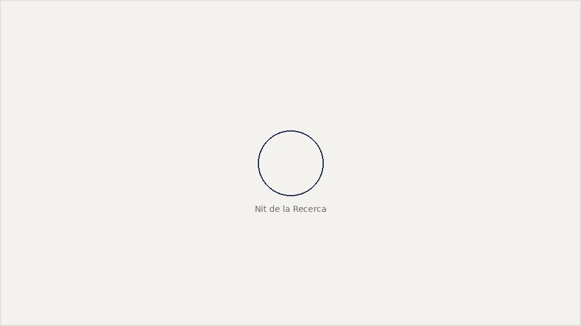
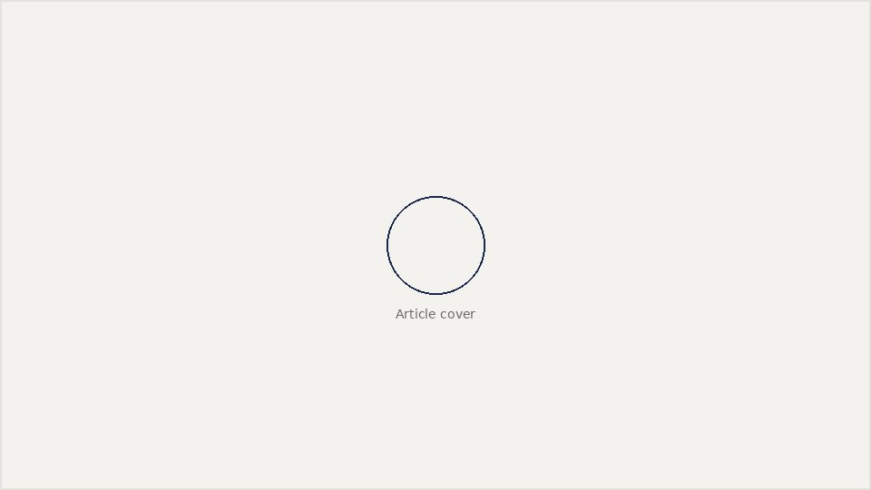
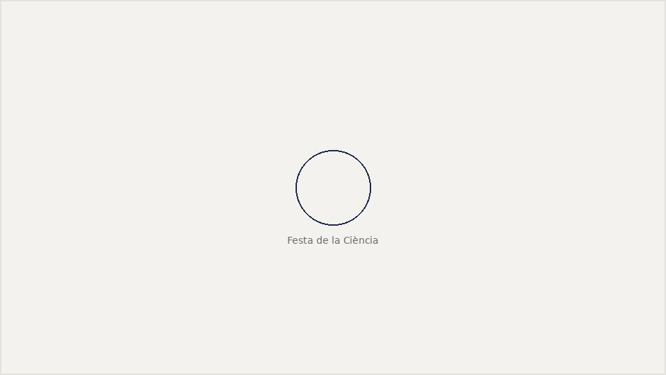
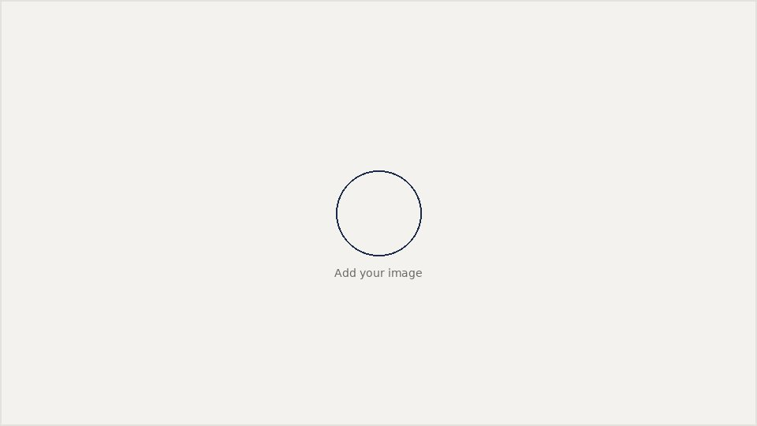

Sharing physics beyond the seminar room
Talks, workshops, and articles aimed at general audiences — from planetarium workshops to popular-science writing. Replace the placeholder video embeds and links with your own.
Taller "Escolta l'Univers"
Matinal Astronòmica de Les Franqueses del Vallès — a hands-on workshop introducing gravitational-wave astronomy to a general audience.
Watch recording →
Nit de la Recerca 2025 (CosmoCaixa)
Repeat run of the "Escolta l'Univers" workshop at Barcelona's science museum, as part of the European Researchers' Night.
Event page →
Rompiendo agujeros negros: gravedad cuántica y censura cósmica
A popular-science piece on cosmic censorship and what it would mean for quantum gravity if it were violated, written for the Real Sociedad Española de Física.
Read the article →
Una red neuronal en el sofá
An accessible introduction to physics-informed neural networks and why they're a natural fit for problems in strong gravity.
Read the article →
XI Festa de la Ciència de la Universitat de Barcelona
Co-led the "Escolta l'Univers" workshop with colleagues from the Departament de Física Quàntica i Astrofísica for the university's annual science fair.
Watch recording →
Template card
Duplicate this card for new talks, interviews, or articles — swap the image, eyebrow date, title, and link.
Link →